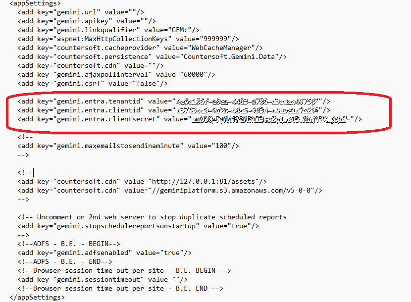

Azure Entra ID is the latest iteration of authentication from Microsoft. Gemini uses an App Registration to connect to Azure and a directory of users. To login to Gemini when Entra ID authentication is enabled, users are sent to the Microsoft online login. If the user is valid in the scope of the App Registration, Microsoft passes Gemini the user's email address and this is used to identify and log the user in. The use of email is a departure from other forms of login to Gemini and requires your Gemini Administrator to ensure there are no duplicate email addresses in your list of users.

To enable Entra ID Authentication, all you need to do is create an App Registration in Azure. For O365 email integration, the App Registration must have a redirect URI that is https://yourServer.com/Admin/OAuthCallback. For Entra ID Authentication, the Redirect URI is https://yourServer.com/account/postentralogin. In both cases, yourServer.com refers to the URL of your Gemini instance. After authenticating the user, this is the endpoint in Gemini that Microsoft returns to.
Entra ID App RegistrationYou can (and probably should) use the same App Registration for Microsoft OAuth as you use for Entra ID. An App Registration can have multiple Redirect URIs